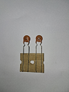
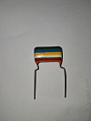
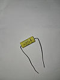
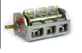

eletrônica básica
Capacitor é um componente eletrônico que armazena carga elétricas temporariamente.
Imagine como uma "caixa d'agua" que armazena eletricidade.
Ele é construído com duas placas condutoras, separadas por um material isolante, que chamamos de Dielétrico.
É esse dielétrico que determina a tensão máxima de trabalho do capacitor, pois se ultrapassarmos esta tensão ele irá colocar em curto as armaduras condutoras e danificar o capacitor(ele pode explodir).
COMO FUNCIONA:
Ele funciona num processo de Carga e Descarga; durante a carga os elétrons são acumulados em uma placa e retirados da outra, criando um campo elétrico e acumulando energia. Já na Descarga, essa energia armazenada é descarregada, fornecendo um fluxo de corrente elétrica.
FUNÇÕES DO CAPACITOR:
Armazenamento: guarda energia pra momentos específicos, como flashes de câmeras.
Filtragem: Elimina variações e ruídos em sinais elétricos.
Acoplamento: Bloquear a passagem de corrente contínua (CC) e permitir a passagem de corrente Alternada(AC).
Partida de Motores: Facilitar no momento da partida, onde exige um alto fluxo de corrente elétrica.
TIPOS DE CAPACITORES:
Eletrolíticos (são polarizados)
Cerâmicos (não polarizados)
De Poliester (não polarizados)
De Papel (não polarizados)
Capacitor Variável (não polarizado)
Possue sua capacitância ajustável, usado principalmente em circuitos de sintonia (rádios AM/FM, osciladores) para selecionar frequências, variando a sobreposição de placas metálicas ou a distância entre elas.
